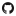

Meu nome é Bruno Tozi Damião, sou estudante de análise e desenvolvimento de sistemas desde setembro de 2021. Comecei a estudar tecnologia por que vi que a tecnologia faz parte da minha mais do que eu tinha percebido, sempre gostei de mexer em computador, jogar, essas coisas. Quando eu programei pela primeira vez foi em python e eu gostei muito, amo quando eu programo e vejo o resultado é muito satisfatorio. Desisti de aprender python por conta de conselhos de terceiros e entao comecei a estudar front-end e gostei também, gosto de dar vida as coisas e decorar as janelas que sempre abrimos no computador. Eu tenho um objetivo esse ano, espero conseguir ao menos um emprego ou virar freelancer para poder sair da casa dos meus pais e conseguir ter minha propria vida sabe, acho que vai ser melhor pra eles e melhor pra mim... preciso conquistar meus objetivos e nao quero mais precisar depender deles.
/youtube - Se increve lá no meu canal no YouTube
/TDBruno - Acessa meu repositório público no GitHub
/TDBruno - Me segue lá no Instagram
/BRUNODAMIAO - Me adiciona lá no LinkedIn
/BRUNODAMIAO - Me segue lá no Twitter
/brunotozi - Me acompanha lá no Facebook